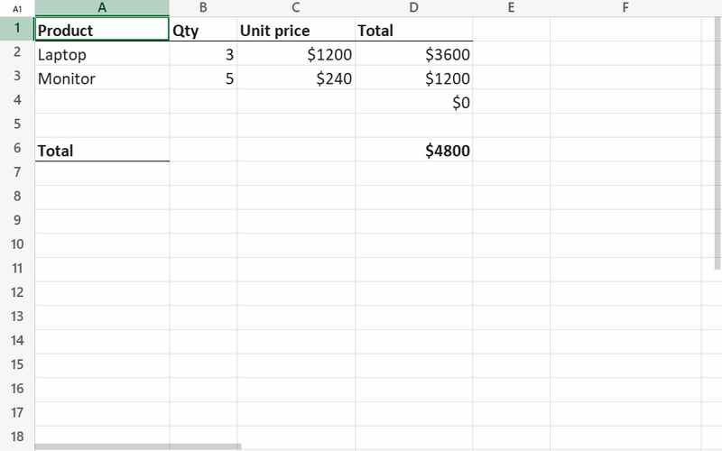

<universal-sheet>
The <universal-sheet> web component — an .xlsx editor that draws the grid to a canvas with the look of Microsoft Excel: column widths and row heights from the workbook, number formats, fonts, borders, merged cells, conditional formatting, charts, images and shapes. Formulas are recalculated by a built-in engine with Excel's functions.
Package @universal-office/sheet

- Opens .xlsx and .xls (Excel 97–2003, converted in memory); saves .xlsx, rewriting only what was edited
- Inline cell editing typed like Excel (numbers, dates, percentages, currency, booleans, formulas) with function autocomplete
- Recalculation of dependent cells across all sheets on every edit
- Formula language and number separators follow the user's locale (
=SUM(A1,1.5)or=SOMA(A1;1,5)) - Range selection, undo/redo, copy and paste (formulas adjusted), fill down/right, find and replace
- Formatting saved to the .xlsx: font, fill, borders, alignment, wrap, number formats, merge cells, column widths and row heights, hide/unhide, frozen panes, gridlines
- Optional built-in bars, like Excel: a compact toolbar (default) or a ribbon, formula bar, sheet tabs and a status bar with sum/average/count; English, Portuguese and Spanish UI; light and dark
- Frozen panes, hidden rows/columns, hyperlinks, comments
- Zoom, resizable rows and columns (double-click to autofit)
Just want to edit spreadsheets? The same editor is Universal Sheet (Beta) in the ready-to-run desktop app Universal Office (Beta) — Write, Sheet and Slides in one install — for Windows, macOS and Linux: download it from the releases page.
Installation
npm install @universal-office/sheetAll the code is inside the package; its only dependency is @universal-office/font-files (pinned to an exact version), the open fonts. Serve these paths:
| Path | What it is |
|---|---|
index.js | The component (registers <universal-sheet> on import) |
chunks/ | Parts loaded on demand (the built-in bars, PDF export) |
@universal-office/font-files | Open fonts used as metric-compatible substitutes (see Fonts) |
import { FontResolver } from '@universal-office/sheet';
FontResolver.shared().configure({ baseUrl: '/node_modules/@universal-office/font-files' });
const sheet = document.querySelector('universal-sheet');
sheet.loadXlsx(new Uint8Array(await (await fetch('/budget.xlsx')).arrayBuffer()));
sheet.addEventListener('us-selection', (e) => console.log(e.detail.ref, e.detail.edit));<universal-sheet style="display:block; height:100vh"></universal-sheet>Give the element a size with CSS — it fills its box. For a complete spreadsheet app with menus, formula bar and sheet tabs, add the bars:
<universal-sheet topbar bottombar style="display:block; height:100vh"></universal-sheet>Attributes and properties
| Attribute / property | Description |
|---|---|
formula-locale / formulaLocale | Locale of formulas and numbers (BCP 47). pt* uses Portuguese function names, errors and booleans (=SOMA, #N/D, VERDADEIRO); anything else uses English (=SUM, #N/A, TRUE). The decimal separator comes from the region; the argument separator is ; when the decimal is ,. Default: the browser's language. |
lang | UI language (en · pt · es; any region: es-MX, es-419… → Spanish) of the component and its bars. Without it: the first of Spanish/Portuguese/English the browser prefers (es-* → Spanish, pt-* → Portuguese), otherwise English. It does not change the formulas: function names follow formula-locale, which has Portuguese and English names only (formula-locale="es-ES" keeps English names with the Spanish separators: =SUM(A1;1,5)). |
topbar | Built-in top bar: title, menus, tools and the formula bar (see Built-in bars). |
toolbar | compact (default — title above the File · Edit · View · Insert · Format · Tools · Help menus and one toolbar row that collapses by priority, like Google Sheets) or ribbon (File · Home · Insert · Formulas · View · Help tabs, like Excel). |
bottombar | Built-in sheet tabs and status bar (sum, average, count of the selection; zoom). |
theme | auto (default) · light · dark. Without it the bars follow the CSS color-scheme the element inherits; light/dark force it. The grid stays light, like Excel's. |
accent | green (default) · teal · blue · amber · red · purple · neutral: the element's own palette for the bars and the selection (used even when the page has --u-color-* tokens). |
storage-key | Remembers this instance's bar choices (toolbar style, formula bar, sheet tabs, theme, accent) in localStorage. Falls back to id; with neither, choices last only for the session. |
hidden-commands / hiddenCommands | Commands, menus, groups, tabs and bar controls to hide (comma- or space-separated), everywhere: bars, menus, context menu and shortcuts — like the Write's. Example: hidden-commands="file title save print sheet:insert". |
nofiledrop | The bars never open dropped files (the cancelable us-file-drop still fires). |
nounloadprompt | No browser "leave page?" prompt for unsaved changes. |
host | Optional integration with the host app (Electron): native dialogs, OS fonts, close confirmation, window controls (see Host integration). |
fileName | File name reported by CELL("filename"). Set before loading (the bars set it from the title). |
shouldRecalcOnOpen | (workbook) => boolean. Return true to recalculate everything on open; otherwise the values saved in the file are shown, like Excel. |
onSelectionChange | Callback form of us-selection. |
activeCellEditText | What a formula bar should show for the active cell. |
effectiveTheme | 'light' · 'dark': the theme in effect (see us-theme-change). |
Built-in bars
topbar and bottombar turn the element into a complete spreadsheet app — nothing to wire. The bars are a chunk loaded on demand: without the attributes the element loads none of it and looks exactly as before. They are built with the same toolbar framework as <universal-write> (@universal-office/ui), so both products share menus, dialogs, keyboard handling, colors and plugins.
- Compact (
toolbar="compact", default): the workbook title above the menus (editable — it is the name suggested when saving), a Save .xlsx button, and one toolbar row — undo, redo, print, zoom, currency, percent, decimals, number formats, font, size, bold, italic, strikethrough, font color, fill color, borders, merge, alignment, wrap, AutoSum; when space runs out the lowest-priority groups collapse into their own buttons and then into "⋮", and the menus into "☰". - Ribbon (
toolbar="ribbon"): quick access toolbar (save, undo, redo), File menu and the Home tab (Clipboard, Font, Alignment, Number, Cells, Editing groups, with the Format Cells launchers), Insert (sheet, function, AutoSum), Formulas (Function Library, Calculate Now), View (formula bar, gridlines, sheet tabs, status bar, zoom, Freeze Panes, theme, accent, toolbar style) and Help. - Formula bar under either bar: the Name Box (shows the selection; type a reference —
B12,A1:C5,Sheet2!A1— and Enter to go there), the fx button (Insert Function) and the formula of the active cell with function autocomplete. View › Formula bar hides it. - Bottom bar (
bottombar): sheet tabs with previous/next and + (Insert Sheet), and the status bar with Average · Count · Sum of the selection (when two or more cells are selected, like Excel) and the zoom slider. - Menus: - File — New, Open (.xlsx, .xlsm, .xls), Save, Save as, Download as PDF,
OpenDocument Spreadsheet (.ods), CSV and TSV (active sheet), Web page, Markdown, XML Spreadsheet 2003; Print (a PDF of the workbook); Properties. - Edit — Undo, Redo, Cut, Copy, Paste, Paste values, Fill (down, right), Clear (all, formats, contents), Select all, Find, Replace, Go to. - View — Formula bar, Gridlines, Sheet tabs, Status bar, Freeze (panes at the active cell, top row, first column, unfreeze), Zoom, previous/next sheet, Theme, Accent color, Toolbar (compact or ribbon). - Insert — Sheet, Function, AutoSum (Sum, Average, Count numbers, Max, Min). - Format — Number (General, Number, Currency, Accounting, Short date, Long date, Time, Percentage, Fraction, Scientific, Text, More number formats…, Comma style, Percent style, Increase/Decrease decimal), Text (bold, italic, underline, strikethrough, bigger/smaller), Font color, Fill color, Alignment (horizontal, vertical, indent, wrap), Merge cells (merge & center, merge across, merge cells, unmerge), Borders (bottom, top, left, right, none, all, outside, thick outside), Rows and Columns (height/width, AutoFit, hide, unhide), Format Cells… (Number, Alignment, Font and Fill tabs), Clear formats. - Tools — Calculate now. Help — Keyboard shortcuts, About.
- Context menu on the grid (cut, copy, paste, paste values, insert function, clear, merge, rows, columns, Format Cells), drag and drop of a spreadsheet to open it, unsaved-changes prompt on leaving the page.
- A command whose API the element does not have stays hidden.
Light and dark
Like <universal-write>: the bars follow the **CSS color-scheme of their context** (it crosses the shadow DOM) and every color is a --u-color-* token or a light-dark() color, so the switch is pure CSS and live; theme forces it. Without accent, the bars use the page's --u-color-* tokens when it defines them, otherwise the element's own palette (green). The grid stays light, like Excel's.
CSS variables: --us-font (UI font), --us-background (one background for the bars, formula bar, sheet tabs and status bar; default --u-color-surface-container-low), --uo-bar-bg, --uo-bar-container (the toolbar pill), --uo-accent, --us-formula-font. Parts: topbar, bottombar, toolbar, titlebar, menubar, toolrow, tabs, ribbon, menu, popover, dialog, notice, formula-bar, sheet-tabs, statusbar.
Host integration
What only the host application can do comes in through the optional sheet.host object (an Electron shell, for example); without it the bars use the browser (File System Access, downloads, a PDF window for printing, beforeunload):
sheet.host = {
openFile: () => bridge.open(), // → { name, bytes, path? } | null
saveFile: (bytes, { name, saveAs, path }) => bridge.save(bytes, name, path), // → name | { name, path } | null
exportFile: (kind, name, data) => bridge.export(kind, name, data), // data() → bytes/text after the user picks
print: ({ pdf, title }) => bridge.print(pdf, title), // system print dialog
listFonts: bridge.listFonts, resolveFonts: bridge.resolveFonts, // OS fonts
setDirty: (dirty, name) => bridge.setDirty(dirty, name), // confirm on close
onSaveBeforeClose: (cb) => bridge.onSaveBeforeClose(cb),
closeWindow: () => bridge.close(),
setTitleTheme: (dark, barColor) => bridge.setTitleTheme(dark, barColor), // window buttons
setTitle: (title) => { document.title = title; },
windowControlsOverlay: true, // frameless window: reserve the OS window buttons, drag by the title row
};openWorkbook(sheet, bytes, name, { path }) (exported) opens a workbook the way File › Open does: title, file name and, with path, where Save writes. When the page saves and opens files itself, handle the cancelable us-save-request (detail: { saveAs, format }) and us-open-request events and call preventDefault(): the bars then do nothing for those actions. sheet.setNotice(element, { tone }) shows a notice band between the title row and the tools (tone: info · warning · error; null removes it).
Plugins
The same model as <universal-write>: install per instance with sheet.use(plugin) / sheet.unuse(id), or for every instance with UniversalSheetElement.register(plugin) / unregister(id). A plugin may declare setup({ sheet }) (returns its cleanup) and toolbar({ sheet, lang, theme, ui }), returning commands and their places in the bars — { commands, compact: { title, leading, menus, groups, trailing }, ribbon: { title, tabs, groups: [{ tab, … }], qat } }; items accept before: '<id>'. ui is the widget kit (createBarButton, createBarIcon, createBarRow, barCss…), also available as loadBarKit(). Labels take a string or { en, pt, es }; es is optional, and without it the Spanish UI shows the English text.
sheet.use({
id: 'acme.audit',
toolbar: () => ({
commands: [{ id: 'acme:audit', label: { en: 'Audit', pt: 'Auditar' }, icon: 'info', run: () => audit(sheet) }],
compact: { groups: [{ id: 'acme', label: 'Acme', items: ['acme:audit'] }] },
ribbon: { groups: [{ tab: 'home', id: 'acme', label: 'Acme', cells: [{ cmd: 'acme:audit', size: 'large' }] }] },
}),
});Methods
| Method | Description |
|---|---|
loadXlsx(bytes: Uint8Array) | Opens .xlsx or .xls on the workbook's active sheet. Throws on an invalid file. |
newWorkbook() | A blank workbook (one sheet, Sheet1/Planilha1, Aptos Narrow 11). |
saveXlsx(): Uint8Array | Commits any edit in progress and returns the .xlsx. Parts that were not edited are kept as they were. |
isDirty() · setDirty(v) | Changed since loading (or since setDirty(false), which the bars call after saving). |
getSheetNames() · selectSheet(i) · activeSheet | Sheets (tabs). |
addSheet(name?) | Inserts an empty sheet at the end and selects it; returns its name. (The workbook is rewritten and reopened: undo starts over.) |
goToRef('B12') | Selects a cell. |
selectRange('B2:D8') · getSelection() · selectAll() | Range selection ('C:C' columns, '3:5' rows, 'Sheet2!A1'); getSelection() → { sheet, ref, range, col, row, c1, r1, c2, r2 }. |
setZoom(z) · getZoom() | Zoom, 0.4–3. |
setCellValue(col, row, text) | Writes text as if typed (1-based column and row): '' clears, =… is a formula. Returns { ok: true } or { ok: false, message }. |
setActiveCellText(text) | Same, for the active cell (formula-bar commit; undoable). |
beginEdit(col, row, text?) · commitEdit() · cancelEdit() | Inline editor. |
undo() · redo() · canUndo() · canRedo() | Undo and redo of typing, pasting, clearing, filling, formatting, merging, sizes, hiding, freezing and gridlines (100 steps). |
copy() · cut() · paste(text?, { valuesOnly }) | The selection as tab-separated text (what goes to the clipboard); pasting inside the element brings formulas (relative references adjusted; a cut moves them unchanged) and formats; outside text becomes cells, as typed. |
fill('down' | 'right') · clear('contents' | 'formats' | 'all') | Fill down/right (formulas adjusted) and Clear. |
setFormat({ font, fill, border, align, numFmt }) | Formats the selection in one undo step: font: { bold, italic, underline, strike, size, name, color }, fill: '#RRGGBB' | null, align: { horizontal, vertical, wrapText, indent }, numFmt: 'percent' | { code }. Also setFont, setAlignment, setNumberFormat, adjustDecimals(±1), setBorders(kind). Whole columns/rows get the column/row style, like Excel. |
getCellFormat() | Formatting of the active cell (font, fill, alignment, wrap, number format code, merged). |
merge('center' | 'across' | 'cells') · unmerge() · mergeLosesData() | Merge cells (only the upper-left value is kept, like Excel). |
freezePanes(cols?, rows?) · frozenPanes | Freeze panes (no arguments: at the active cell; 0, 0 unfreezes). |
showGridlines | Gridlines on the active sheet (saved). |
columnWidth(col?) · setColumnWidth(w) · rowHeightPt(row?) · setRowHeight(pt) · autofitColumns() · autofitRows() · setHidden('cols' | 'rows', hidden) | Sizes (column width in characters, as Excel shows it; row height in points) and hide/unhide for the selection. |
find(query, opts) · replace(query, text, opts) · replaceAll(query, text, opts) | Find (moves to the next match), Replace, Replace All (count). Options: matchCase, wholeCell, lookIn: 'formulas' | 'values', allSheets, backwards. |
autoSum(fn) · insertFunction(name) · getFunctionNames() · recalculate() | AutoSum (SUM, AVERAGE, COUNT, MAX, MIN), Insert Function, Calculate Now. |
selectionStats() | { cells, count, numericCount, sum, average, min, max } of the selection. |
getProperties() | Title, author, dates and application from docProps, and the sheet names. |
attachFormulaBar(input) | Adds function autocomplete to your formula-bar <input>; returns a detach function. |
renderRegionToCanvas(sheet, canvas, cols, rows) | Draws a range at 100% (no headers) — e.g. to export a PNG. |
drawingsReady(): Promise<void> | Resolves when fonts, images and drawings are ready. |
use(plugin) · unuse(id) · setNotice(el, opts) | Plugins and the notice band (see Built-in bars). |
A minimal formula bar of your own (the built-in one does this):
const bar = document.querySelector('#formula');
sheet.attachFormulaBar(bar);
sheet.addEventListener('us-selection', () => { bar.value = sheet.activeCellEditText; });
bar.addEventListener('keydown', (e) => {
if (e.key === 'Enter') sheet.setActiveCellText(bar.value);
});Events
| Event | detail | When |
|---|---|---|
us-selection | { ref, range, display, formula, edit, ghost } | The selected cell, range or sheet changed (also after edits). ghost = part of a spilled array. |
us-edit | { ref, text } | A cell was written. |
us-change | { kind } | The workbook changed (edit, format, resize, merge, view, undo…) — once per task. |
us-load | { reload } | A workbook was loaded (reload: addSheet reopened the same one). |
us-entry-error | { message } | Input was refused (invalid formula, part of an array) — Excel's message, in the formula language. |
us-zoom | { zoom } | Zoom changed. |
us-theme-change | { theme } | The effective light/dark theme changed. |
us-save-request · us-open-request | { saveAs, format } · {} | Cancelable: the bars are about to save/open (see Host integration). |
us-file-drop | { files } | Cancelable: files were dropped on the element (with topbar). |
Fonts
The default font of a workbook (Aptos Narrow, Calibri…) defines the column widths, so it matters. Families resolve, in order: fonts the browser can see by name (installed or declared with @font-face) → metric-compatible open substitutes from the folder given to FontResolver (Calibri → Carlito, Cambria → Caladea, Arial → Liberation Sans, Times New Roman → Liberation Serif, Courier New → Liberation Mono) → Liberation Sans. Those fonts come in @universal-office/font-files, installed with this package: serve its folder and point FontResolver.shared().configure({ baseUrl }) at it. The PDF export uses the workbook's Normal font when its file is available, otherwise Liberation Sans.
Keyboard and mouse
Arrows move (leaving merged cells by their edge), Shift+arrows extend the selection, Ctrl+arrows jump to the edge of the data, Home · End go to the first and last column, Ctrl+Home · Ctrl+End to A1 and the last used cell, PageUp · PageDown move 10 rows, Tab · Shift+Tab move sideways, Ctrl+A selects all, Ctrl+Space · Shift+Space the column · row, Ctrl+PageUp · Ctrl+PageDown switch sheets. Typing starts editing, F2 or Enter edit the current content, Delete · Backspace clear the selection, Ctrl+Z · Ctrl+Y undo and redo, Ctrl+C · Ctrl+X · Ctrl+V copy, cut and paste. While editing: Enter commits and moves down, Tab · Shift+Tab commit and move sideways, Escape cancels. Click and drag (or Shift+click) select a range; click a column letter or row number to select it (drag for several); the corner selects all. Wheel scrolls (Shift for horizontal); drag a header border to resize, double-click it to autofit; double-click a cell to edit; hover a red-cornered cell to read its comment.
With topbar, Excel's shortcuts for the bar commands: Ctrl+O open, Ctrl+S save, F12 save as, Ctrl+P print, Ctrl+F find, Ctrl+H replace, Ctrl+G · F5 go to, Ctrl+B · I · U · 5 bold, italic, underline, strikethrough, Ctrl+1 Format Cells, Ctrl+D · Ctrl+R fill down/right, Alt+= AutoSum, Shift+F3 insert function, F9 calculate, Shift+F11 insert sheet, Ctrl+9 · Ctrl+0 hide rows · columns, Ctrl+Shift+9 unhide rows, Ctrl+Shift+1 · 2 · 3 · 4 · 5 · 6 number, time, date, currency, percent, scientific formats, Ctrl+Shift+` General, Ctrl+Shift+7 outside borders, Ctrl+Shift+- no border (keys by position, so they work on any keyboard layout). Help › Keyboard shortcuts lists them all.
Current limitations
Not yet available (and so not in the bars): inserting or deleting rows, columns and cells; sorting and filtering; inserting charts, images, shapes, comments and hyperlinks; editing conditional formatting, data validation and cell styles; renaming, deleting and moving sheets; Paste Special beyond values; page setup and print options (print and PDF use the converter's layout); right-to-left editing (right-to-left sheets are drawn only by renderRegionToCanvas); hiding the row and column headings.
License
MIT. The fonts (@universal-office/font-files) are under the SIL OFL 1.1 and the Apache License 2.0.